| |
代码组及其含义
G功能由G代码及后接2位数表示，规定其所在的程序段的意义。G代码有经下两种类型。
| 种类 |
意义 |
| 一次性代码 |
只在被指令的程序段有效 |
| 模态G代码 |
在同组其它G代码指令前一直有效 |
| G代码 |
组别 |
功能 |
| G00 |
01 |
定位（快速移动） |
| *G01 |
直线插补（切削进给） |
| G02 |
圆弧插补CW（顺时针） |
| G03 |
圆弧插补CCW（逆时针） |
| G04 |
00 |
暂停，准停 |
| G28 |
返回参考点 |
|
G32 |
01 |
螺纹切削 |
|
G50 |
00 |
坐标系设定 |
|
G65 |
00 |
宏程序命令 |
| G70 |
00 |
精加工循环 |
| G71 |
外圆粗车循环 |
| G72 |
端面粗车循环 |
| G73 |
封闭切削循环 |
| G74 |
端面深孔加工循环 |
| G75 |
外圆，内圆切槽循环 |
|
G90 |
01 |
外圆，内圆车削循环 |
| G92 |
螺纹切削循环 |
|
G94 |
端面切削循环 |
|
G96 |
02 |
恒线速开 |
| G97 |
恒线速关 |
|
*G98 |
03 |
每分进给 |
| G99 |
每转进给 |
|
注1：带有*记号的G代码，当电源接通时，系统处于这个G代码的状态。
注2：00组的G代码是一次性G代码。
注3：如果使用了G代码一览表中未列出的G代码，则出现报警（NO.010），或指令了不具有的选择功能的G代码，也报警。
注4: 在同一个程序段中可以指令几个不同组的G代码，如果在同一个程序段中指令了两个以上的同组G代码时，后一个G代码有效。
注5：在恒线速控制下，可设定主轴最大转速（G50）。
注6：G代码分别用各组号表示。
注7：G02，G03的顺逆方向由坐标系方向决定。
|
指令格式:G00X(U)Z(W)
G00指令使刀具以快速移动速度移动到指定位置.
其中X(U) Z(W) 为指定点坐标值
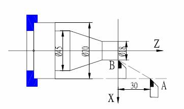
例:以G00方式从A点移动到B点,如图:
绝对编程:
N0010 G00 X18 Z0 ;
相对编程:
N0100 G00 U52 W-30;
在G00中同时指令X..Z轴时,X,Z轴按向各自的最高速度及加速度同时独立运行,互不影响.任何一轴到位自动停止运行,另一轴继续移动直到指令位置.如换刀及刀补指令与G00指令在同一程序段中时,刀补值与G00的移动值合并执行,以提高工作效率,故当有换刀及刀补时尽量与G00指令同处一程序段.
G00指令可以单独定义X或Z轴.
G00的运行速度由参数P05/P06设定,受快速倍率的控制.
Z轴实际快速速度=P05X快速倍率
X轴实际快速速度=P06X快速倍率
机床实际能达到的最高速度应视机床的实际状况及配套的电机而定.
G00是模态指令,下一段相同是可省略不写.
G00可以简写成G0,G0与G00等效.
指令X.,Z轴同时移动时应特别注意刀具的位置是否在安全区域，以避免撞刀。
|
指令格式：G01 X(U) Z(W) F;
G01指令使刀具按设定速度沿当前点到X(U),Z(W)指定的连线同时到达指定的终点位置，其中X(U) Z(W)为指定的终点坐标。
F-进给速度 单位：mm/min
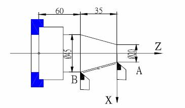
G01直线插补
以G01方式从A点移动到B点，速度为150mm/min.如图2：
绝对编程：
N0100 G01 X45 Z-45 F150 ;
相对编程：
N0100 G01 U25 W-35 F150 ;
G01指令也可以单独定义X或Z轴的运动。
G01指令的移动速度由F指定的值设定并受进给倍率控制，F值也是模态值，不改变时可以省略。
实际进给速度＝F X进给倍率
G01指令是模态指令，下段相同时可省略
G01可写成G1,G1与G01等效
|
指令格式：G02 X(U) Z(W) I K F ;圆心坐标编程
G03 X(U) Z(W) I K F ;
或 G02 X(U) Z(W) R F ; 半径编程
G03 X(U) Z(W) R F ;
指令中字段说明：
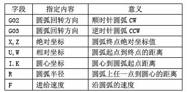
G02.G03指令可使刀具以设定速度按规定的圆弧轨迹运动，G02为顺时针圆弧，G03为逆时针圆弧。本系统定于的圆弧方向是以圆心为参考点：顺时针方向为G02,逆时针方向为G03。
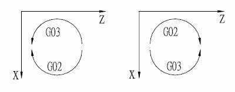
G02/G03 Z负方向 G02/G03 Z正方向
地址X,Z或U，M指定圆弧的圆心坐标，I,K分别对应X,Z轴，以起点为原点指向圆心的矢量，I为X轴上分量（需要直径表示），K为Z轴上的矢量，I,K方向与X,Z轴正方向相同时取正值，否则取负值。如图所示
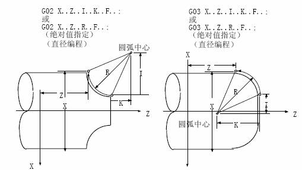
圆心坐标定义
I的取值为直径量表示，一般根据图纸计算出来是半径值，在编程时应乘以2后输入。在不使用I.K编程时，可使用半径R值编程。
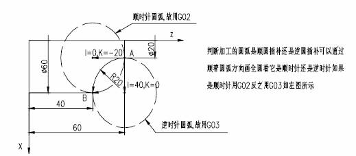
圆弧插补
从A点到B点的顺圆插补，进给速度为100mm/min.如图
N0100 G0 X20 Z60 ;快速定位到圆弧加工起点
N0110 G02 X60 Z40 I0 K-20 F100 ;圆心编程
N0110 G02 X60 Z40 R20 F100 ;半径编程
或 N0110 G02 U40 W-20 I0 K-20 F100 ;
N0110 G02 U40 W-20 R20 F100 ;
从A点到B点的逆圆插补，进给速度为100mm/min.
N0100 G0 X20 Z60 ;快速定位到圆弧加工起点
N0110 G03 X60 Z40 I40 K0 F100 ;圆心编程
N0110 G03 X60 Z40 R20 F100 ;半径编程
或 N0110 G03 U40 W-20 I40 K0 F100 ;
N0110 G03 U40 W-20 R20 F100 ;
注1：最大圆弧半径R不能大于4199mm，否则系统不能保证其正确性。
注2：采用K,I编程时，系统将对当前点坐标（起点），终点坐标和圆心坐标进行验证，如果终点不在圆上，Z方向的误差大于0.05mm或X方向的误差大于0.1mm时，系统将作出报警提示：“数据补兼容”。如果起点到终点的弧度大于180°，系统将作出报警提示：“超出限度”。
注3：采用R编程时，如果直径2R小于当前点（起点）到终点的距离，系统将作出报警提示：“数据不兼容”。
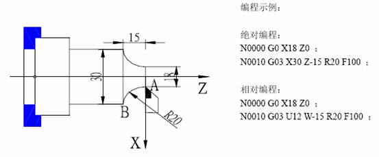
|
指令格式：G33 X(U) Z(W) P(E) K I;
其中：X(U) Z(W) ------螺纹终点的绝对/相对坐标。
P�D�D公制螺纹导程，单位：mm 范围：0.25－100mm
E------英制螺纹导程，单位：牙/英寸 范围：100－0.25牙/英寸
K------螺纹退尾起始点距螺纹终点在Z方向的长度。单位：mm 省略时无退尾
加工中直螺纹K大于0时，螺纹退尾时X轴向正方向移动，K小于时，螺纹退尾时X轴向负方向移动，锥螺纹加工中K的符号必须与X的移动方向相同。
I�D�D螺纹退尾时X方向的移动总量（直径值）单位mm，有K值但省略I时，系统默认为I=2XK即45°退尾。I不能为负值。
G33指令可以加工公英制等螺距的直螺纹，锥螺纹，内螺纹，外螺纹等常用螺纹。
当G33指令中X（U）坐标值非零时表示加工锥螺纹，在主轴正转情况下，正方向切削为右旋螺纹，负方向切削为左旋螺纹，主轴反转时则相反。
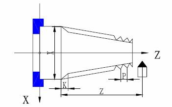
G33螺纹切削
一般加工螺纹时从粗车到精车同一轨迹要进行多次螺纹切削。因为螺纹切削开始是从检测到主轴编码器的一转信号后才开始的，因此进行多次螺纹切削零件圆周上的切削零件原轴上的切削点是仍相同的，但必须保证主轴转速不变，当主轴转速发生变化时螺纹会产生少许误差。
螺纹加工需要与主轴速度相适应。主轴转速过高会因系统响应不上使螺纹乱牙。推荐主轴转速满足下式： N X P ≤3000
其中：N-主轴转速单位 ：转/分 最高转速小于2000转/分
P－螺纹导程 单位：mm 英制螺纹时将其换算成公制单位计算
在螺纹切削开始及结束部分，一般由于升降速的原因，会出现导程不正确部分，考虑此因素影响，指令螺纹长度时应比实际需要的螺纹长度要长些，一般情况下，升速长度＞1.3mm.
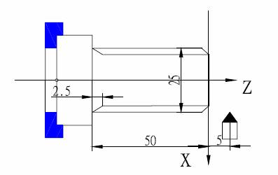
螺纹切削
例：螺纹导程2mm切深2.5mm(直径值,分两次切入).
N0000 G0 X25 Z5 ; 靠近工件
N0010 G1 X23.5 F100 ;进刀1.5mm(直径编程)
N0020 G33 Z-50 P2 K2.5 ;第一次螺纹切削
N0030 G0 X26 ;退刀2.5mm
N0040 Z5 ;回起始位置
N0050 G1 X22.2 ;第二次进刀1mm
N0060 G33 Z-50 P2 K2.5 ;第二次螺纹切削
N0070 G0 X26 ;X退刀
N0080 Z5 ;Z回起始点
注1:螺纹切削过程中,进给保持键无效,进给倍率无效.
注2:螺纹切削过程中,主轴停止,进给随之停止.
注3:螺纹切削必须配置1200线或1024线光电编码器并使编码器与主轴同步旋转,编码器线数选择必须与实际安装的编码器线数相同,当编码器为1200线时参数P11的SCOD应设置为0,当编码器为1024线时参数P11的SCOD应设置为1,若SCOD设置错误则加工螺纹时螺距会不正确.
注4:对于带退尾的螺纹,主轴转速.螺距,X轴加速时间越大,X轴起始速度越低,I/K的比值对螺纹的退尾长度都有影响,转速越高螺距越大,X轴加速时间越大,X轴起始速度越低,I/K比值越小螺纹的退尾长度越长,反之螺纹退尾长度就越短,相对而言I/K的比值对螺纹的退尾长度影响较大.
注5:前一个程序为螺纹切削指令,且现在程序段也是螺纹切削指令在切削开始时,不检测螺头信号(每转一个)直接开始移动.
如:G33 W-20 P3:螺纹切削检测一转信号.
G33 W-30 P2:螺纹切削不检测一转信号.
|
指令格式:G32 Z(W) P(E)
其中:Z(W) ----功牙的终点坐标或功牙长度.
P------公制螺纹的螺距.
E------英制螺纹的螺距.
G32 Z轴功牙循环的执行过程.
Z轴进刀功牙
关主轴
等待主轴完全停止
主轴反转
Z轴退刀,至循环起点
主轴停止
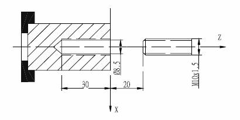
G32功牙循环
例:螺纹导程1.5mm的单头螺纹
N0010 G0 X0 Z20 ;快速定位工件起点
N0020 M3 S01 ;主轴正转
N0030 G01 Z2 F500;Z轴靠近工件
N0040 G32 Z-30 P1.5;Z轴进刀功牙
N0050 G0 Z20 ;离开工件,回程序起点
N0060 M02 ;程序结束
注1:功牙前应根据可功牙的旋向确定主轴旋转方向,功牙结束后主轴将停止转动,如需继续加工则应根据需要重新启动主轴.
注2:由于本指令为刚性功牙,在主轴停止信号有效后主轴还将有一定的减速时间.此时Z轴将仍然跟随主轴的转动,知道主轴完全停止,因此实际加工时螺纹的底孔应比实际的需要稍深一些,具体的长度应根据功牙时主轴转速高低和是否有主轴刹车装置而定.
注3:其他注意事项G33螺纹切削相同.
|
指令格式:G50 X Z;
G50指令定义一个坐标系并确定刀具当前位置为坐标系中X.Z的坐标值.
G50建立的坐标系称为工件坐标系,一旦建立起工件坐标系,后面指令中绝对坐标的位置都是在此坐标系中的坐标值.
建立工件坐标系时一般是把工件坐标系的Z轴定义在工件旋转中心,而工件坐标系的X轴则可根据习惯将其定义在卡盘端面或工件的端面,
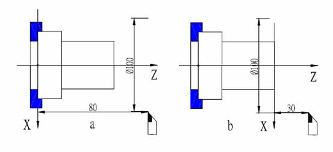
G50工件坐标系设定
图a中指令:G50 X100 Z80 ;加工时Z坐标为正值.
图b中指令:G50 X100 Z30 ;加工时Z坐标为负值.
注1:执行G50时,系统自动检查当前坐标与G50定义的坐标是否相同,若相同,则继续执行下一段程序,若不相同,则提示:回程序零点,此时若按ENTER键,则先回到G50指令的程序起始点,再执行下一段程序,若按运行键,则不执行回到程序起点动作,而直接将当前坐标修改为G50定义的坐标值(执行新程序时),若按其它键,则不执行任何操作,按ESC键返回按运行键之前的状态,回程序起点的过程按G00的执行方式进行.
注2:若使用G50指令编程在上电以后没有执行G50指令之前不能使用从程序中间某一段开始执行的功能,否则坐标数据可能不正确,G50只能单独一段,不能与其他指令共段.若共段,则其他指令不执行.
注3:如程序第一段不用G50指令,则必须用G00对X.Z两轴绝对坐标同时进行定位,当第一个移动指令使用相对编程时系统须按绝对坐标处理.
注4:如果前一个程序使用G50指令,而后一个程序不使用G50指令,则程序参考点仍然保留上一个程序定义的点,执行回参考点指令时,将仍然回到原来的位置.
|
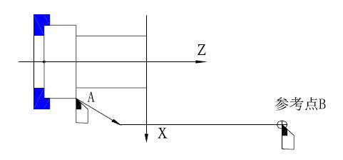
G26返回参考点
指令格式:G26
G26指令使刀具回到参考点(加工起点)G26指令回参考点的方式与G00指令的执行方式相同,如图
回参考点过程:
执行G指令功能后,X.Z轴移动到G50指令中X.Z坐标确定的点,如果程序中没有使用G50指令,执行G26指令机床将移动到手动方式中确定的参考点,若用户未在手动方式中确定参考点,则以现执行的G50指令确定的点为参考点.若系统从未确定过参考点,系统默认X=150,Z=150点为参考点,在不使用G50指令程序中执行G26指令后的第一个运动,指令必须以X.Z轴同时由A点按各自的最快速度及快读倍率确定的速度移动到参考点B.
当程序中使用G50指令确定参考点时,执行G26指令则退回G50确定点,后面的程序按需要编程.如程序没有G50指令则G26指令将根据用户在手动操作中确定的参考点位置来运行,如果用户未确定参考点则以前一此G50的位置作参考点.若从未确定参考点则系统按默认值X=250,Z=250执行.在未使用G50指令时使用了G26指令,则G26后面的运动指令之前必须重新用G0指令先定位,否则后面的指令将不会正确执行.
注1:在G26回参考点后,如需继续移动则必须用G00 X.Z轴移动坐标同时定位后才能正确移动.
注2:G26返回参考点速度以G00速度进行,受快速倍率的控制.
注3:G26返回参考点后,撤消刀偏及系统偏置.
指令格式:G04 D
其中 D―延时时间.单位:秒 范围:0.001-65.535秒
G04指令确定执行执行两个程序段的间隔时间
例:G04 D2.5 ;表示延时2.5秒
|
|
G98是每分进给状态。
刀具每分钟走的距离，用F后续的数值直接指令。
G98是模态的，一旦指令了G98状态，在G99（每转进给）指令之前，一直有效。
|
G99是每转进给状态。主轴每转刀具的进给量用F后续的数值直接指令。
G99是模态的，一旦指令性了G99状态，在G98（每分进给）指令之前，一直有效。
| |
每分进给 |
每转进给 |
| 指定地址 |
F |
F |
| 指定代码 |
G98 |
G99 |
| 指定范围 |
1～8000mm/min(F1～F8000) |
0.01～500.00mm/re(F1～F50000) |
| 限制值 |
每分进给、每转进给都限制在某一固定的速度上。此限制值由机床厂家设定。（限制值是倍率后的数值） |
| 倍率 |
每分进给、每转进给都可用0~150%的倍率（10%一挡） |
注1：当位置编码器的转速在1转/分以下时，速度会出现不均匀地加工，可用1转/分以下的转速，这种不均匀会达到什么程度，不能一概而论，不过在1转/分以下，转速越慢，越不均匀
注2：G98，G99是模态的，一旦指令了，在另一个代码出现前，一直有效。
注3：F代码最多允许输入7们，但是，即使输入进给速度值超过限制值，移动时也限制值上。
注4：使用每转进给时，主轴上必须装有位置编码器。
|
所谓的恒线速控制是指S后面的线速度是恒定的，随着刀具的位置变化，根据线速度计算出主轴转速，并把与其对应的电压值输出给主轴控制部分，使得刀具瞬间的位置与工件表面保持恒定的关系。
线速度的单位如下：
线速度单位根据机械厂家不同有时会不同。
恒线速控制指令如下：
G96 S__；
S后指定线速度
恒线速控制指令取消如下：
G97 S__；
S后指令主轴转速
恒线速控制时，旋转轴必须设定在零件坐标的Z轴（X=0）上来。
（1）主轴速度倍率
对于指定的线速度或转速，根据主轴的倍率选择，可以使用50，60，70，80，90，100，110，120%的倍率。
（2）主轴最高转速限制
用G50
S后续的数值，可以指令恒线速控制的主轴最高转速（转/分）。
G50 S__；
在恒线速控制时，当主轴转速高于上述程序中指定的值时，则被限制在主轴最高转速上。
（3）快速进给（G00）时的恒线速控制
对于用G00指令的快速进给程序段，当恒线速控制时，不进行时刻变化的刀具位置的线速度控制，而是计算程序段终点位置的线速度。这是因为快速不进行切削的缘故。
注1：当电源接通时，对于没设定主轴最高转速的状态，即为不限制状态。
注2：对于限制，只适用于G96状态，G97状态时不限制。
注3：G50，S0；意味着限制到0米/分。
注4：在G96状态中，被指令的S值，即使在G97状态中也保持着。当返回到G96状态时，其值恢复。
G96 S50；（50米/分）
G97 S1000；（1000转/分）
G96 X3000；（50米/分）
注5：机床锁住时，机械不动，对应程序中X坐标值的变化，进行恒线速控制。
注6：切螺纹时，恒线速控制也是有效的，因此切螺纹时，用G97方式使恒线速控制无效，以使主轴以同一转速转动。
注7：每转进给（G99），在恒线速控制方式下（G96），虽然无使用意义，但仍有效。
注8：从G96状态变为G97状态时，G97程序段如果没有指令S码（转/分），那么G96状态的最后转速作为G97状态的S码使用。
N100 G97 S800；（800转/分）
…
N200 G96 S100；（100米/分）
…
…
N300 G97；（X转/分）
X是N300前一个程序段的转速，即从G96状态变为G97状态时，主轴速度不变。G97―G96时，G96状态的S值有效。如果S值没有指令，则S=0米/分。
注9：恒线速控制中指定的线速度是相对于编程轨迹的，而不是刀补后的位置的线条速度。
|
|
指令格式:G90 X(U) Z(W) R F ;
其中:X(U) Z(W)―柱(锥)面终点位置,两轴坐标必须齐备,相对坐标不能为零.
R―循环起点与循环终点的直径之差.省略R为轴面切削.
F―切削速度.
G90循环执行过程:
X轴从A点快速移动到B点.
X.Z轴以F速度从B点切削到C点.
X轴以F速度从C切削到D点.
Z轴从D点快速移动到A点.
G90循环结束后刀具仍在循环起始点.如仅重新定义终点的X坐标,则循环按新的X(U)坐标值重复上述循环过程.
使用相对坐标时,U的符号由A到B的X方向确定.W的符号由B到C的Z方向确定.
锥面切削循环时,R的符号由C到B的X方向确定.
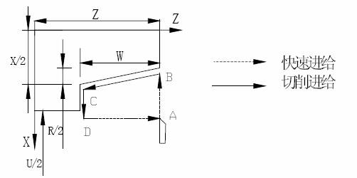
内外圆柱(锥)面车削循环
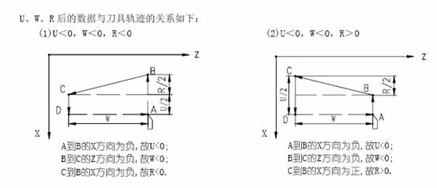
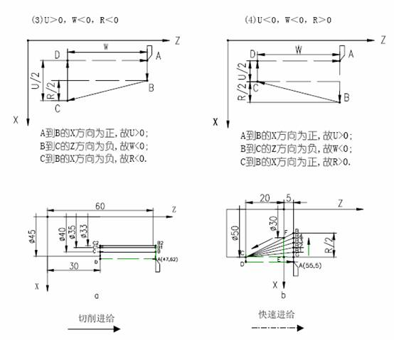
G90循环U,W,R符号与刀具轨迹的关系
例1:加工图a所示的外圆柱面,第一次进刀5mm第二次进刀2mm切削速度F=100/min.
N0010 G0 X47 Z62 ; 快速定位到A点
N0020 G90 X40 Z30 F100 ;循环一次A B C D A
N0030 X35 ;第一次进刀执行一次循环A B1 C1 D A
N0040 X33 ;第二次进刀再执行一次循环 A B2 C2 D A
执行完上述程序段后刀具仍停留在A点.
例2:加工图b所示的原锥面.以每次R=-5mm进刀,切削速度F=100mm/min.
N0010 G00 X55 Z5 ;快速定位到A点
N0020 G90 X50 Z-20 R-5 F100 ;执行循环 A B1 C D A
N0030 G90 X50 Z-20 R-10 ;执行循环 A B2 C D A
N0040 G90 X50 Z-20 R-15 ; 执行循环 A B3 C D A
N0050 G90 X50 Z-20 R-20 ; 执行循环 A B4 C D A
N0060 G90 X50 Z-20 R-25 ; 执行循环 A B C D A
执行完上述程序段后刀具仍停留在A点.
注1:内.外圆加工及切削进给方向由循环开始的位置与指令中的X.Z坐标值自动确定.
注2:单程序段运行时,每按一次键,执行一个循环步骤,运行中单段停止时在每一个步骤的终点停止.
注3:若循环结束后的下一段指令不是单独的X轴或Z轴上的移动指令而是其他的G.M指令,则循环自动结束.
注4:其它单一固定循环的注意事项与G90循环前三项相同.
注5:在执行G90.G94循环时,如果有锥度,G90.X.Z.R均不可省略.
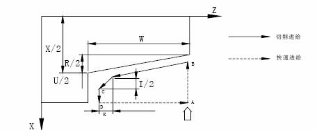
G92螺纹切削循环
|
指令格式:G92 X(U) Z(W) P(E) I K P L ;其中I不能取负值.
其中:X(U) Z(W)―螺纹终点的坐标位置
P---公制螺纹螺距,范围:025-100mm
E---英制螺纹导程.范围100-025牙/英寸
I---螺纹退尾时X轴方向的移动距离.当K≠0时省略I则默认I=2XK即45℃方向退尾.
K---螺纹退尾时退尾起点距终点在Z轴方向的距离.
R---螺纹起点与螺纹终点的直径之差(螺纹锥度,省略R为直螺纹)
L---多头螺纹的螺纹头数(省略L为单头螺纹)范围:1-99
当R≠0时R＜0退尾方向为正向(X向正方向移动),R＞0退尾方向为负向(X向负方向移动).
当R=0 K≠0时,由K的符号决定X轴的退尾方向.K＞0退尾方向为正向,(X向正方向移动),K＜0退尾方向为负向(X向负方向移动)
当R≠0 K≠0时,R决定锥度方向,K决定退尾方向.
G92螺纹循环的执行过程:
X轴从A点快速进给到B点.
X.Z轴螺纹切削到C点.
X轴快速退到D点.
Z轴快速退回A点.
若多头螺纹,重复1-4的过程进行多头螺纹的切削.
一般螺纹切削都需要多次进刀,此时只需修改进刀终点的X坐标值(或相对于起点的增量值).螺纹循环结束后,坐标位置仍然在起点.
R.K的符号与刀具轨迹的关系如下:
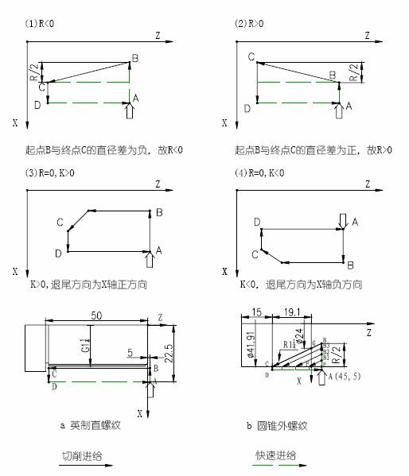
G92螺纹切削循环
例1.加工图a所示的英制圆柱管螺纹.( G1牙数11 ,D=41.910,D2=40.431,D1=38.952)
N0010 G0 X45 Z5 ; 快速定位A点
N0020 M03 S600 ;主轴正转,600转/分
N0030 G92 X41 Z-50 E11 ;第一次进刀,切削0.91cm
N0040 X40.2 ;第二次切削0.8cm
N0050 X39.6 ;第三次切削0.6cm
N0060 X39.2 ;第四次切削0.4cm
N0070 X38.952 ;第五次切削至要求尺寸
执行完上述程序段后刀具仍停留在A点.
例2:加工图b所示的圆锥外螺纹(R1=41.910,D2=40.431,D1=28.952,P=2.309,螺纹有效长度19.1)
N0010 G00 X45 Z5 ;快速定位A点
N0020 M03S600 ;主轴正转,600转/分
N0030 G92 X40 Z-19.1 P2.309 R-22.6 ;第一次进刀切削
N0040 X36 ;第二次进刀切削
N0050 X32 ;第三次进刀切削
N0060 X28.952 ;第四次进刀切削
执行完上述程序段后刀具仍停留在A点.
|
(a)用下述指令，可以进行端面切削循环。 G94
X（U）__Z(W)__F_
指令格式:G94 X(U) Z(W) R F;
其中:X(U) Z(W)---终点坐标.两轴坐标必须齐备,相对坐标不能为零.
R---锥面起点Z向坐标与锥面终点Z向坐标之差.省略R为端面切削.
F---切削速度
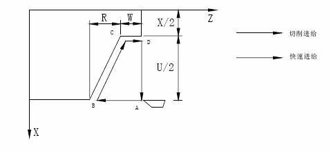
G94端面撤消循环
G94循环执行过程:
Z轴从A点快速移动到B点.
X.Z轴以F速度从B点切削到C点.
Z轴以F速度从C切削到D点.
X轴从D点快速移动到A点.
G94循环结束后刀具仍在循环起始点.如仅重新定义终点的Z坐标,则循环按新的Z坐标值重复上述循环过程.
使用相对坐标时,U的符号由B到C的X方向确定,W的符号由A到B的Z方向确定.
锥面切削循环时,R的符号由C到B的Z轴方向确定.
例1:加工图a,第一刀进刀5mm,第二刀进刀1.5mm切削速度80mm/min编程如下:
N0010 G0 X62 Z45 ;快速定位到A点
N0020 G94 X25 Z40 F80; 端面循环切削第一次循环A B C D A
N0030 Z35;进刀5mm第二次循环A B1 C1 D A
N0040 Z33.5 ;进刀1.5mm第三次循环 A B2 C2 D A
例2:加工图b,以每次R=-5mm进刀,切削速度F=100mm/min.编程如下:
N0010 G0 X55 Z5 ;快速定位到A点
N0020 G94 X30 Z-5 R-5 F100;端面循环切削第一次循环A B1 C D A
N0030 G94 X30 Z-5 R-10 ;进刀5mm第二次循环A B2 C D A
N0040 G94 X30 Z-5 R-15 ; 进刀5mm第三次循环A B3 C D A
N0050 G94 X30 Z-5 R-20; 进刀5mm第四次循环A B4 C D A
N0060 G94 X30 Z-5 R-25; 进刀5mm第五次循环A B C D A
注1:在G94循环时,如果有锥度,X.Z.R均不可省略,否则尺寸有误.
注2:其它注意事项,与G90相同
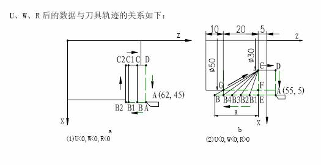
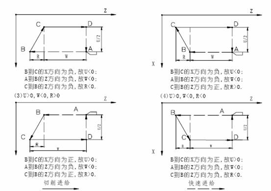
G94循环U,W,R符号与刀具轨迹的关系
|
指令格式: G71 X(U) I K L F ;
其中:X(U)―精加工轮廓起点的X轴坐标值
I---X轴方向每次进刀量,直径值表示,无符号数
K---X轴方向每次退刀量,直径值表示,无符号数
L---描述最终轨迹的程序段数量(不包括自身).范围:1-99
F---切削速度
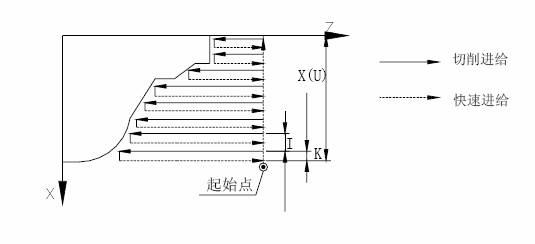
内外圆粗车复合循环
循环执行过程
X轴快速进给I的距离
Z轴切削进给,进给终点由系统自动计算
X轴以F速度退K的距离
Z轴快速退回起点
X轴进给I+K的距离
重复2-5的过程直到X方向到达指令中X指令的位置
按最终轨迹路线执行,并加工出最终轨迹描述的形状
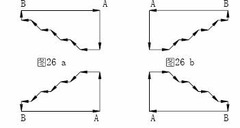
G71切削几种情况
注1:用G71指令切削的形状有以下四种情况,但无论哪一种都是根据刀具平行Z轴移动切削的.
注2:在描述A到B的程序中不调用子程序.
注3:循环结束时刀具停在描述最终轨迹的最后一段终点处
注4:在描述A到B的程序段中只可以有G01? G02? G03指令,但必须保证X与Z的尺寸数据都是单纯的增大或减小.
注5:刀具起点应保证停留在最终轨迹形成的矩形范围之处,并通过编程使刀具移到最终轨迹的起点.
注6:G71指令后应紧跟粗车循环的切削指令.
注7:指令中地址I.K均为无符号数,进刀退刀方向由系统自动确定.
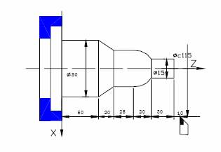
G71切削实例
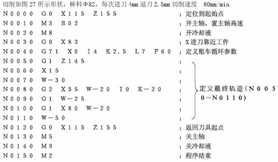
|
指令格式:G72 Z(W) I K L F ;
其中:Z(W)―精加工轮廓起点的Z轴坐标值:
I---Z轴方向每次进刀量
K---Z轴方向每次进刀量
L---描述最终轨迹的程序段数量(不包括自身).范围:1-99
F---切削速度
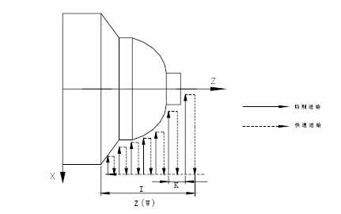
G72端面粗车复合循环
循环的执行过程
Z轴快速进刀I的距离
X轴以F速度切削进给,切削终点由系统自动计算
Z轴以F速度退K的距离
X轴快退回起点
Z轴快速进刀I+K的距离
重复2-5的过程直到Z方向到达指令中Z指定的位置
按最终轨迹路线执行并加工出最终轨迹描述的形状.
注1:G72指令是根据刀具平行于X轴切削的
注2:在描述最终轨迹的程序段中X,Z的尺寸数据只能单独的增大或减小
注3:其它注意事项同G71.
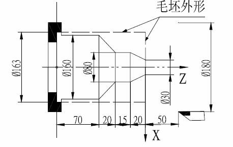
G72切削示例
切削图所示形状,棒料163,每次进刀5mm,每次退刀3mm,切削速度80mm/min.
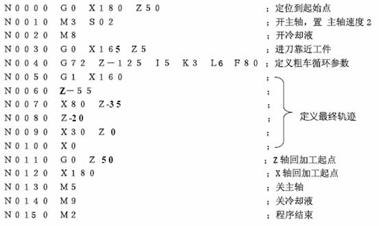
|
在实际加工过程中,对于某些局部需要反复加工或已基本成型的零件,可使用局部循环指令来简化编程.局部编程的循环体由用户编程,执行后的结束点坐标由程序运行后决定.
在程序中G22和G80必须成对使用,在循环体中不能再有G22指令,即G22指令不能嵌套.
指令格式:G22 L ---G80
其中:L---循环次数范围1---99? L=1时不能省略.若L＞99，则程序将出现”参数错”报警.
循环执行过程
G22定义程序循环体开始,L定义循环次数
执行循环体程序
G80循环体结束时循环次数L减1,若L不等于零,再次执行循环体程序,若L等于零循环结束,顺序执行后面的程序.
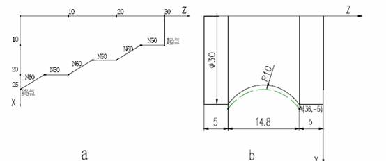
G22.G80循环加工实例
加工图a所示形状工件,使用G22.G80循环编程非常方便,程序清单如下:
N0000 G50 X100 Z100 ; 定义坐标系
N0010 M3 S01 ;开主轴置主轴低速
N0020 M8 ; 开冷却液
N0030 G0 X10 Z30 ;快速定位到循环起点
N0040 G22 L3 ; 程序循环开始,循环三次
N0050 G1 W-5 F50 ; Z负向切削5mm,F=50mm/min
N0060 U5 W-5 ; X正向切削5mm,Z负向切削5mm
N0070 G80 ; 循环体结束
N0080 G26 ;X.Z快速退回程序零点
N0090 M5 ; 关主轴
N0100 M9 ;关冷却液
N0110 M2 ; 程序结束
加工图b所示的圆弧时,使用G22.G80循环编程如下:
N0000 G0 X36 Z-5 ;快速定位圆弧起点
N0010 G22 L3 ; 程序循环开始,循环三次
N0020 G01 U-2 F50 ;X向进刀1mm
N0030 G03 W-14.28 R10 ; X.Z向进刀,切削凹圆弧
N0040 G01 W14.28 F500 ; Z向退刀到圆弧起点
N0050 G80 ;循环体结束
注1:在上两侧中,按工件实际形状编程,图30A的编程方法适用于锻造.铸造等粗加工,可使毛�燃�高效成形,进而提高了加工效率.图30b的加工方法适用于材料为棒料.
注2:在执行局部循环指令时,不能嵌套循环指令G90.G92.G94.G71.G72等.
|
指令格式:G93 X(U) Z(W) ;
其中:X(U) --- 系统X方向偏移量,X与U相同.
Z(W)----系统Z方向偏移量,Z与W相同.
G93指令将使系统按指令的偏移量快速移动,移动之后系统坐标不变,从而留出加工余量.
对于粗车和需要留出加工余量的工件程序,可以先用G93指令留出加工余量,再按图纸的实际尺寸进行编程即可.粗车完后,可用G93 X0 Z0 指令撤消系统偏置,进行精加工.
在G93指令中,使用X.Z与使用U.W定义系统偏置的效果相同.
G26.G27.G29指令及按键回程序零点后,撤消系统偏置.指令中X(U) .Z(W)同时为零也撤消系统偏置.多次使用G93指令时,每次的偏移量将叠加在一起,回零时撤消全部系统偏置.
|
指令格式:G74 X(U) Z(W) I K R E F;
其中:X(U) Z(W) -----孔底坐标.省略X为深孔钻循环
I----每次Z轴进刀刀量(Z轴)
K----每次z轴退刀量(Z轴)
R----啄钻循环或深孔循环选择,当省略R或R=0时每次退刀仅退K的距离即啄钻循环,当R≠0时每次退刀都退到第一次钻孔的起始点即深孔钻循环.
E―在X轴方向每次的偏移量(直径值).
F―进刀速度.
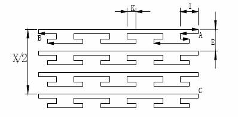
G74端面深孔加工循环
G74端面深孔加工循环执行过程(省略R或R等于0时):
Z轴以F速度进给I的距离.
Z轴快速退K的距离.
Z轴以F速度进给I+K的距离.
重复2-3的过程直到Z轴进给到B点.
Z轴快速退到A点.
如X不为零,则X轴快速偏移E的距离.
重复1-4的过程直到X轴进给到C点,Z轴进给到B点.
Z轴快速返回C点,X轴快速返回A点.
G74循环结束后刀具仍在循环起始点.
注:指令中未考虑刀具的宽度,指令中终点X坐标应为实际终点坐标减去或加上刀具宽度,(根据进刀方向不同而定)
执行图中的端面孔加工循环,刀具宽度5mm.,每次进刀6mm.退刀2mm,每次偏移5mm,进刀速度100mm/min.
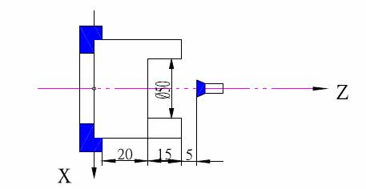
端面深孔加工循环加工示例
N0050 G0 X0 Z40 ;定位到进刀点;
N0060 G74 X22.5 Z20 I6 E5 F100 ;端面加工循环,X终点坐标加刀宽为编程终点.
R≠0时,G74指令的循环过程:
Z轴以F速度由A点进刀到B点.
Z轴以快速速度退回A点.
Z轴以快速速度进刀到C点.
Z轴以F速度由C点进刀到D点
Z轴以快速速度退回A点.
Z轴以快速速度进刀到E点.
Z轴以F速度由E点进刀到F点.
Z轴以快速速度退回A点.
Z轴以快速速度进刀到G点.
(10) Z轴以F速度由G点进刀到H点.
(11)Z轴以快速速度退回A点.
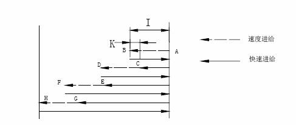
G74循环---深孔钻循环(R非零)
|
指令格式:G75 X(U) Z(W) I K E F ;其中I/K不能为负值
其中:X(U) Z(W) ---槽终点坐标.省略Z为切断循环.
I---每次X轴进刀量
K---每次X轴退刀量
E---在Z轴方向每次的偏移量
F---进刀速度
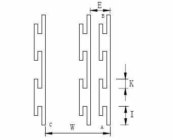
G75切槽循环
G75切槽循环执行过程:
X轴以F速度进给I的距离.
X轴快速退K的距离.
X轴以F速度进给I+K的距离.
重复2-3的过程直到X轴进给到B点.
X轴快速退到A点.
如Z不为零,则Z轴快速偏移E点的距离.
重复1-4的过程直到Z轴进给到C点,X轴进给到B点.
X轴快速返回C点,Z轴快速返回A点.
G75循环结束后刀具仍在循环起始点.
注:指令中未考虑刀具的宽度,实际使用中终点Z坐标,应根据实际情况加上或减去刀具宽度I.K.E均为无符号数.
执行图中的切削循环,刀具宽度5mm.每次进刀6mm,每次退刀2mm,每次偏移5mm,进刀速度150mm/min.
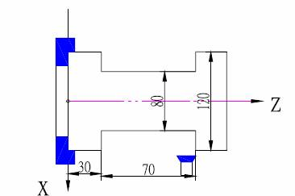
切槽循环
N0030 G0 X125 Z100 ;定位到起始点;
N0040 G75 X80 Z35 I6 K2 E5 F150 ;切槽循环,终点尺寸应加上刀具宽度.
复合循环
为进一步简化编程,减少计算机量而特别提供复合循环切削功能,编程时只给出精加工形状的轨迹,系统可以自动决定中途粗车的刀具路径. |
|